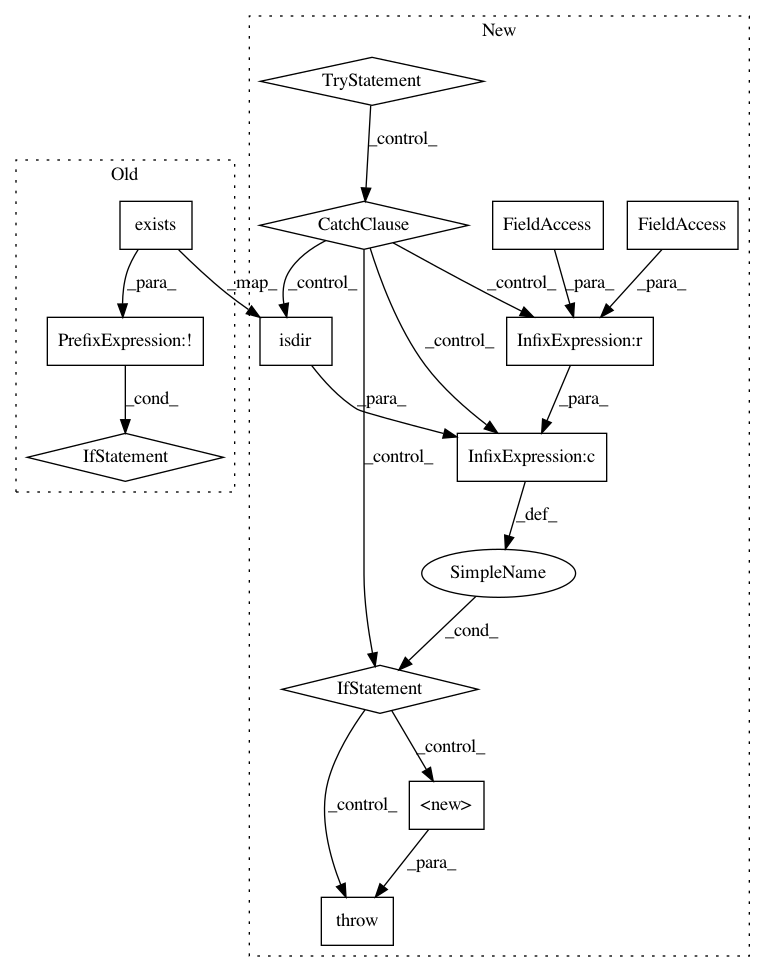

1d0758bad42918d0344f18e57d1d13747705f855,testing/test_deploy.py,,main,#,575
Before Change
test_log = os.path.join(
args.artifacts_dir, "logs",
"test_deploy." + args.func.__name__ + args.deploy_name + ".log.txt")
if not os.path.exists(os.path.dirname(test_log)):
os.makedirs(os.path.dirname(test_log))
// TODO(jlewi): We should make this a util routine in kubeflow.testing.util
// Setup a logging file handler. This way we can upload the log outputs
// to gubernator.
root_logger = logging.getLogger()
file_handler = logging.FileHandler(test_log)
root_logger.addHandler(file_handler)
After Change
args.artifacts_dir, "logs",
"test_deploy." + args.func.__name__ + args.deploy_name + ".log.txt")
try:
os.makedirs(os.path.dirname(test_log))
except OSError as exc: // Python >2.5
if exc.errno == errno.EEXIST and os.path.isdir(os.path.dirname(test_log)):
pass
else:
raise
// TODO(jlewi): We should make this a util routine in kubeflow.testing.util
// Setup a logging file handler. This way we can upload the log outputs
// to gubernator.
root_logger = logging.getLogger()
file_handler = logging.FileHandler(test_log)
root_logger.addHandler(file_handler)
In pattern: SUPERPATTERN
Frequency: 3
Non-data size: 13
Instances
Project Name: kubeflow/kubeflow
Commit Name: 1d0758bad42918d0344f18e57d1d13747705f855
Time: 2019-02-18
Author: ashahba@users.noreply.github.com
File Name: testing/test_deploy.py
Class Name:
Method Name: main
Project Name: kubeflow/kubeflow
Commit Name: 1d0758bad42918d0344f18e57d1d13747705f855
Time: 2019-02-18
Author: ashahba@users.noreply.github.com
File Name: testing/test_deploy.py
Class Name:
Method Name: deploy_minikube
Project Name: kubeflow/kubeflow
Commit Name: 1d0758bad42918d0344f18e57d1d13747705f855
Time: 2019-02-18
Author: ashahba@users.noreply.github.com
File Name: testing/test_deploy.py
Class Name:
Method Name: setup_kubeflow_ks_app